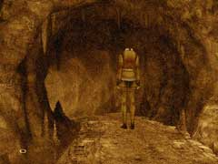

| 概要 | 地図 |
| 淡いヒント集 | ヒント集 | 的確なヒント集 |
| 攻略最短ルート |
| 場所選択に戻る |
夢の世界
|
洞窟
 ・この世界はどのようなものか? ・ここの洞窟はどのようなものか?
アンナ

・彼女は何者か? ・彼女は何を知っているか? ・また、それはあなたにとって有益な情報か?
工場の入り口

・工場の入り口はどこにあるか? ・Syberiaをプレーした人は、すぐに思い出せるだろう。 ・もし、扉が開いていなかったらあなたは何かやり残したことがあるはずだ。
ボラルバーグおじさん
・彼はハンスの居場所を知っているか? ・ハンスに会うには、どうすればよいか? ・彼と、階段そばにある時計にはどのような関係があるのか?
| 次へ >> |
|
| 場所選択に戻る |
| 概要 | 地図 |
| 淡いヒント集 | ヒント集 | 的確なヒント集 |
| 攻略最短ルート |
Syberia II
| 目次へ戻る | ページの上部へ |